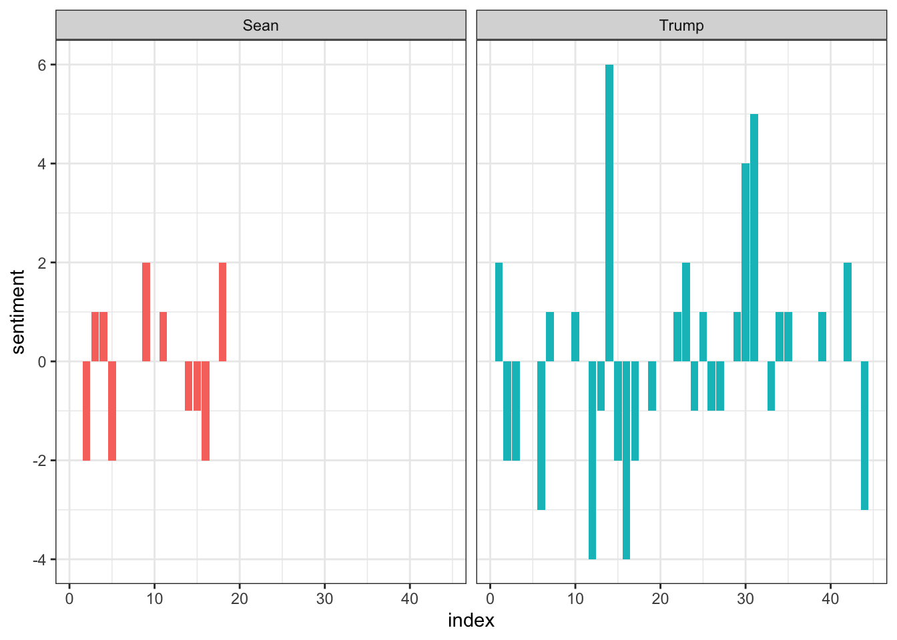
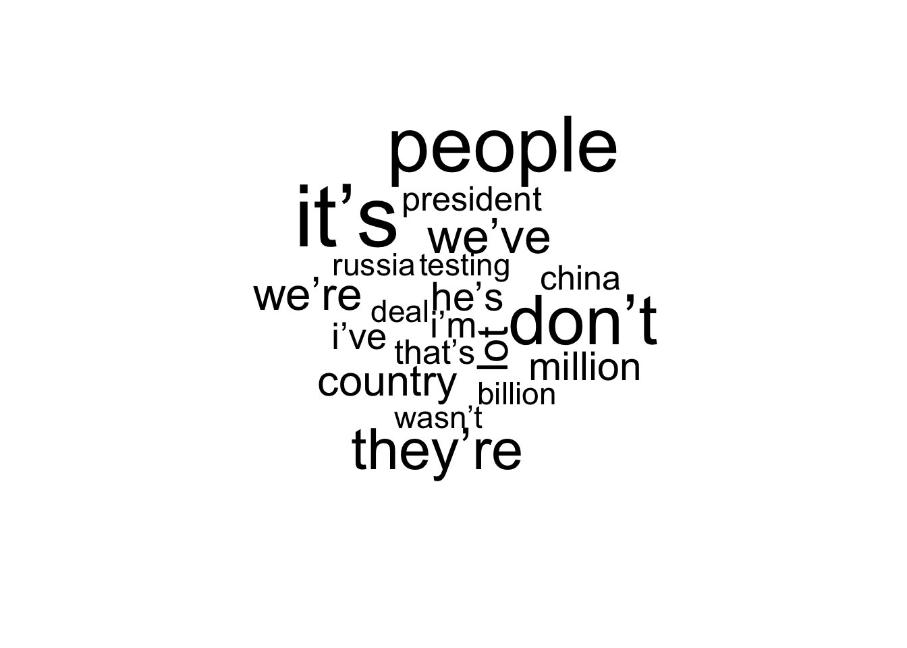
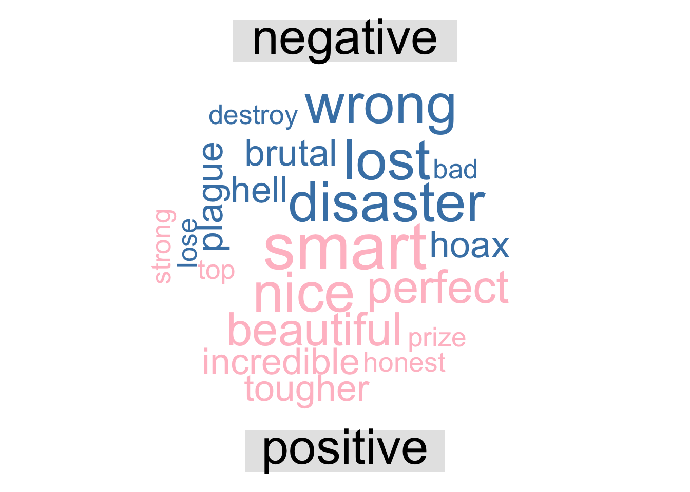

The transcript of the President Donald Trump interview with the reporter has been loaded to analyse his sentiments during the interview.
head(interview)## # A tibble: 6 x 3
## X1 speaker conv
## <dbl> <chr> <chr>
## 1 1 Sean And now, here’s my town hall that we taped earlier today from an airplane han…
## 2 2 Trump Well, it’s going to be probably 6,000, 7,000 jobs, could go up to 10 in Wisco…
## 3 3 Sean We as a nation, we’ve been watching, it was universal agreement that what hap…
## 4 4 Trump Well, first of all, we have arrested, I think almost, but it could be over th…
## 5 5 Sean Yeah, you had Shaun King, the radical.
## 6 6 Trump These have nothing to do with any particular event, other than they’re troubl…A number of other attendees had asked questions with Trump, but we will only focus on the answers from Trump. Filtering the speech from Trump and Sean, creating line number and dividing the sentence into one-word data.
tidy_int <- interview %>% filter(speaker == c("Trump", "Sean")) %>%group_by(speaker) %>% mutate(linenumber = row_number()) %>% ungroup() %>% unnest_tokens(word, conv) %>% anti_join(stop_words)## Warning in speaker == c("Trump", "Sean"): longer object length is not a multiple of shorter
## object lengthMeasuring sentiment in the positive and negative node. Reference used from Bing sentiment word list.
int_senti <- tidy_int %>% inner_join(get_sentiments("bing")) %>% count(speaker, index = linenumber %/% 1, sentiment) %>% spread(sentiment, n ,fill = 0) %>% mutate(sentiment = positive - negative)## Joining, by = "word"Plotting the sentiment of Trump and reporter Sean.
ggplot(int_senti, aes(index, sentiment, fill =speaker)) + geom_col(show.legend = FALSE) + facet_wrap(~speaker) + theme_bw()
Cloud plot of most used words during the interview related to sentiment.
tidy_int %>% anti_join(stop_words) %>% count(word)%>% with(wordcloud(word, n, max.words = 20))
Displaying Positive and Negative sentiments during the interview.
tidy_int %>% inner_join(get_sentiments("bing")) %>% count(word, sentiment, sort = TRUE) %>% acast(word ~ sentiment, value.var = "n", fill = 0) %>% comparison.cloud(colors = c("steelblue", "pink"), max.words = 20)
Analysing the sentiment according to the sentence.
#sent_int <- interview %>% unnest_tokens(sentece, conv, token = "sentences")